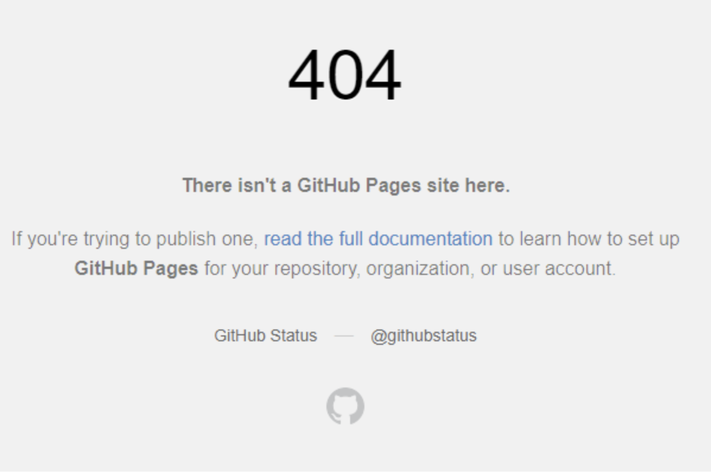
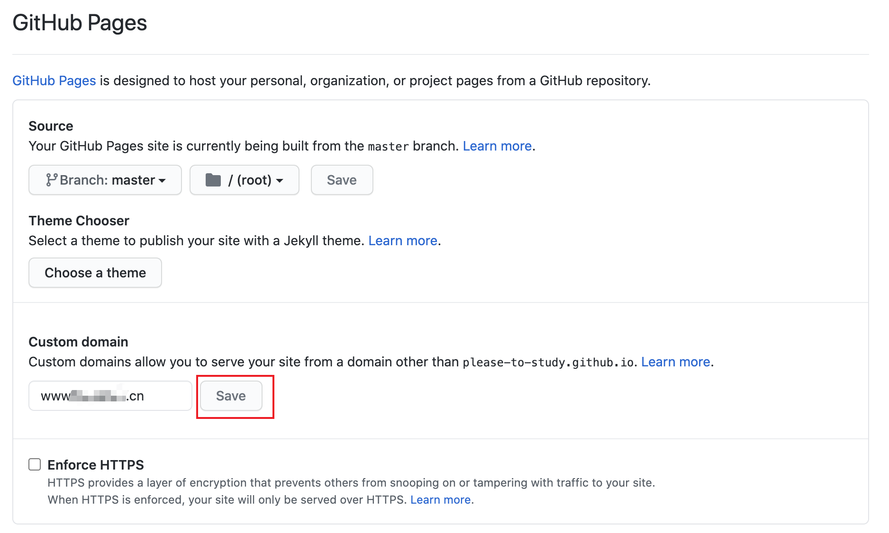

创建GitHub博客主页(仓库主页)绑定域名问题There isn’t a GitHub Pages site here

出现这个404 的错误，一般表示你的域名已经能够解析到了XXX.github.io，但是你的github还需要进一步配置。
首先，我们需要先进入到你的项目中去:

点击settings进行我们的仓库配置，之后找到GitHubPages进行页面的配置：

上图中的 domain就是我们需要设置域名的地方，我们输入完成我们的域名之后，进行绑定（点击Save）就可以了。
这个时候我们会在我们的仓库目录下面看到一个名字为CNAME的文件：
里面的内容就是你的域名的全称。
之后我们还需要再确认一下我们的域名配置（腾讯云域名）。
先进行域名解析
点击添加记录
这里要添加2条记录，第一条记录的主机记录为www，记录类型为A，线路类型默认，记录值为你域名绑定的服务器ip地址（若你使用的是阿里云等服务器，这里填写你服务器的公网地址，若你使用的是github服务器则填写github服务器ip）第二条记录只需要把主机记录改为@即可其他的与第一条一样。
github服务器的ip地址可以通过在命令终端中ping 你的主页地址来获得例如我的是ping https://github.com/Please-to-study/Please-to-study.github.io. 这个地址在你的github仓库中可以找到
执行该命令之后可以在终端中看到你的ip地址
这个就是我们要绑定在记录值上的地址（ping域名的时候地址可能会变，因为github动态的分配了3个ip进去，哪个都可以访问的）。
CNAME地址，我们在记录里面写的是www，然后指向了我们的github域名（cname类型的解析为域名解析到域名）。这样我们的解析就算是配置完成了，直接访问我们的www的域名就可以访问到了。